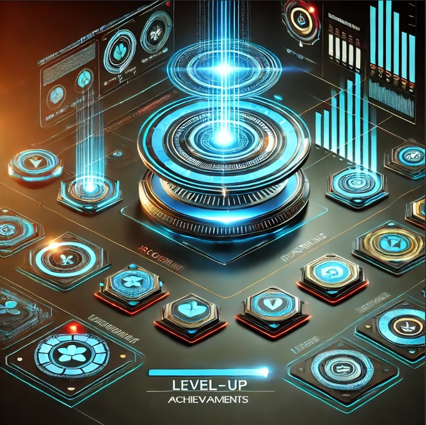

Мои проекты
JollyLevelUP
JollyLevelUP – это инновационная геймифицированная платформа, которая мотивирует пользователей к развитию и достижению целей с помощью системы уровней, наград и внутриигровой экономики.
Особенности:
- Система уровней и достижений, где каждый шаг вознаграждается.
- Возможность интеграции NFT-объектов как уникальных наград.
- Использование блокчейн-технологий для хранения достижений.
Текущий статус: Разработка MVP, подготовка к тестированию.
Планы: Развитие системы квестов и социального взаимодействия.
Arcane Gears
Arcane Gears – это Idle RPG, где игроки развивают своих героев, сражаются с противниками и участвуют в PvP-боях.
Особенности:
- Фэнтезийный мир с уникальными механическими созданиями.
- Тактическая система боя, основанная на комбинациях навыков.
- Экономическая система с интеграцией токенов.
Текущий статус: Разработка концепта, подготовка игровых механик.
Планы: Запуск бета-тестирования с механикой гильдий.

Разработка ботов
Создаю умных Telegram и WhatsApp-ботов для бизнеса, автоматизации и поддержки клиентов.
Особенности:
- Интеграция с CRM-системами (Bitrix24 и др.).
- Использование AI для взаимодействия с пользователями.
- Поддержка многофункциональных команд и автоматизации задач.
Текущий статус: Работа с заказчиками, расширение функционала.
Планы: Улучшение AI-алгоритмов и разработка голосовых ботов.

YouTube-канал Jolly Nomad
YouTube-канал Jolly Nomad посвящён криптовалюте, разработке игр, жизни в Таиланде и стартапам.
Темы:
- Глубокие разборы блокчейн-технологий.
- Разбор игровых проектов и стартапов.
- Личный опыт ведения бизнеса за границей.
Текущий статус: Запуск первых видео.
Планы: Расширение тематики, приглашение гостей и запуск подкаста.